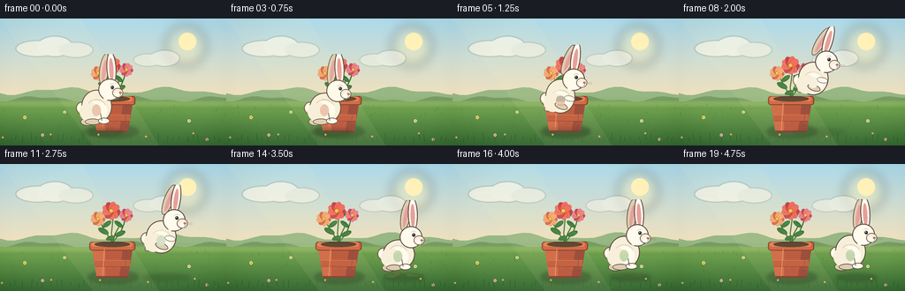
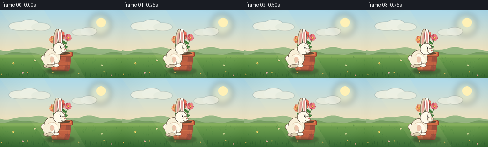
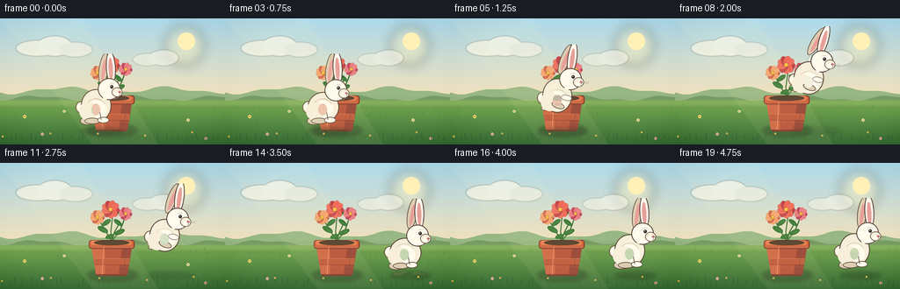
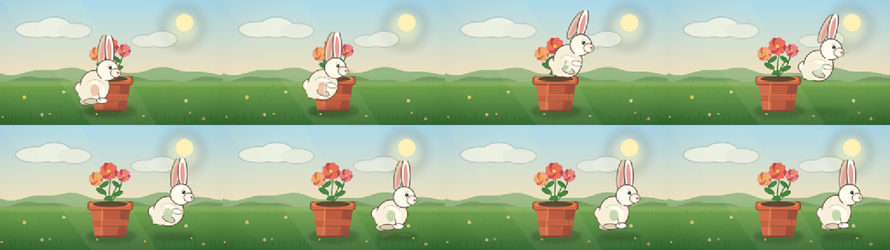

CODING AGENTS AS PIXEL WORLD MODELS
traex/DeepSeek-V4.1-Flash · dynamic_spatial_relationship_0021
点击播放 · 原生 RGB 像素
逐轮保存的候选
回放视频、检查图与代码变化。
每份候选均可单独播放。实际图片检查记录在下方工具轨迹中。
候选 01播放与检查图
点击播放 · 原生 RGB 像素


展开代码变化
--- 上一保存版本
+++ 本次保存版本
@@ -0,0 +1,520 @@
+from __future__ import annotations
+
+import math
+from pathlib import Path
+
+import numpy as np
+from PIL import Image, ImageDraw, ImageFilter
+
+import artifact_io
+
+
+W, H = 256, 144
+SS = 4
+RNG = np.random.default_rng(21)
+
+
+def S(value: float) -> int:
+ return int(round(value * SS))
+
+
+def box(values: tuple[float, float, float, float]) -> tuple[int, int, int, int]:
+ return tuple(S(value) for value in values)
+
+
+def lerp_color(a: tuple[int, int, int], b: tuple[int, int, int], t: float) -> tuple[int, int, int]:
+ return tuple(int(round(a[i] + (b[i] - a[i]) * t)) for i in range(3))
+
+
+def vertical_gradient(size: tuple[int, int], top: tuple[int, int, int], bottom: tuple[int, int, int]) -> Image.Image:
+ width, height = size
+ ramp = np.linspace(0.0, 1.0, height, dtype=np.float32)[:, None, None]
+ colors = np.asarray(top, dtype=np.float32)[None, None, :] * (1.0 - ramp)
+ colors += np.asarray(bottom, dtype=np.float32)[None, None, :] * ramp
+ return Image.fromarray(np.uint8(np.repeat(colors, width, axis=1)))
+
+
+def paste_soft_ellipse(
+ canvas: Image.Image,
+ bounds: tuple[float, float, float, float],
+ color: tuple[int, int, int, int],
+ blur: float,
+) -> None:
+ x0, y0, x1, y1 = bounds
+ pad = blur * 2.2
+ left, top = max(0, S(x0 - pad)), max(0, S(y0 - pad))
+ right, bottom = min(canvas.width, S(x1 + pad)), min(canvas.height, S(y1 + pad))
+ if right <= left or bottom <= top:
+ return
+ patch = Image.new("RGBA", (right - left, bottom - top), (0, 0, 0, 0))
+ draw = ImageDraw.Draw(patch)
+ draw.ellipse(
+ (S(x0) - left, S(y0) - top, S(x1) - left, S(y1) - top),
+ fill=color,
+ )
+ patch = patch.filter(ImageFilter.GaussianBlur(blur * SS))
+ canvas.alpha_composite(patch, (left, top))
+
+
+def rotated_ellipse(
+ canvas: Image.Image,
+ center: tuple[float, float],
+ radii: tuple[float, float],
+ angle: float,
+ fill: tuple[int, int, int, int] | tuple[int, int, int],
+ outline: tuple[int, int, int, int] | tuple[int, int, int] | None = None,
+ width: float = 0.0,
+) -> None:
+ cx, cy = center
+ rx, ry = radii
+ size = int(math.ceil((2.0 * max(rx, ry) + 2.0 * max(1.0, width)) * SS + 8))
+ patch = Image.new("RGBA", (size, size), (0, 0, 0, 0))
+ draw = ImageDraw.Draw(patch)
+ half = size / 2.0
+ draw.ellipse(
+ (
+ half - rx * SS,
+ half - ry * SS,
+ half + rx * SS,
+ half + ry * SS,
+ ),
+ fill=fill,
+ outline=outline,
+ width=max(1, S(width)) if outline is not None else 0,
+ )
+ patch = patch.rotate(angle, resample=Image.Resampling.BICUBIC, expand=False)
+ canvas.alpha_composite(patch, (S(cx) - size // 2, S(cy) - size // 2))
+
+
+def draw_leaf(
+ canvas: Image.Image,
+ center: tuple[float, float],
+ radii: tuple[float, float],
+ angle: float,
+ base: tuple[int, int, int] = (58, 122, 55),
+ light: tuple[int, int, int] = (91, 157, 70),
+) -> None:
+ rotated_ellipse(canvas, center, radii, angle, base, (45, 94, 47, 255), 0.55)
+ vein_end = (
+ center[0] + math.cos(math.radians(angle)) * radii[0] * 0.82,
+ center[1] - math.sin(math.radians(angle)) * radii[0] * 0.82,
+ )
+ draw = ImageDraw.Draw(canvas)
+ draw.line(
+ (S(center[0]), S(center[1]), S(vein_end[0]), S(vein_end[1])),
+ fill=(*light, 220),
+ width=max(1, S(0.45)),
+ )
+
+
+def draw_flower(
+ canvas: Image.Image,
+ center: tuple[float, float],
+ radius: float,
+ petal: tuple[int, int, int],
+ petal_shadow: tuple[int, int, int],
+ center_color: tuple[int, int, int],
+) -> None:
+ cx, cy = center
+ for index in range(9):
+ angle = index * 40.0 + 7.0
+ theta = math.radians(angle)
+ px = cx + math.cos(theta) * radius * 0.52
+ py = cy + math.sin(theta) * radius * 0.52
+ rotated_ellipse(
+ canvas,
+ (px, py),
+ (radius * 0.48, radius * 0.72),
+ -angle - 90.0,
+ petal_shadow if index % 3 == 0 else petal,
+ tuple(max(0, value - 28) for value in petal_shadow) + (170,),
+ 0.35,
+ )
+ draw = ImageDraw.Draw(canvas)
+ draw.ellipse(
+ box((cx - radius * 0.28, cy - radius * 0.28, cx + radius * 0.28, cy + radius * 0.28)),
+ fill=center_color,
+ outline=(126, 87, 33, 210),
+ width=max(1, S(0.35)),
+ )
+ draw.ellipse(
+ box((cx - radius * 0.12, cy - radius * 0.16, cx + radius * 0.03, cy - radius * 0.01)),
+ fill=(255, 225, 111, 220),
+ )
+
+
+def draw_background() -> Image.Image:
+ width, height = W * SS, H * SS
+ sky = vertical_gradient((width, S(101)), (173, 218, 235), (250, 226, 182)).convert("RGBA")
+ canvas = Image.new("RGBA", (width, height), (0, 0, 0, 255))
+ canvas.alpha_composite(sky, (0, 0))
+
+ glow = Image.new("RGBA", (width, height), (0, 0, 0, 0))
+ glow_draw = ImageDraw.Draw(glow)
+ glow_draw.ellipse(box((187, 8, 233, 54)), fill=(255, 239, 174, 82))
+ glow = glow.filter(ImageFilter.GaussianBlur(S(6)))
+ canvas.alpha_composite(glow)
+ draw = ImageDraw.Draw(canvas)
+ draw.ellipse(box((202, 16, 222, 36)), fill=(255, 241, 183, 235))
+
+ cloud = Image.new("RGBA", (width, height), (0, 0, 0, 0))
+ cloud_draw = ImageDraw.Draw(cloud)
+ cloud_draw.ellipse(box((18, 25, 67, 43)), fill=(255, 250, 233, 155))
+ cloud_draw.ellipse(box((42, 20, 82, 43)), fill=(255, 251, 237, 165))
+ cloud_draw.ellipse(box((66, 27, 105, 44)), fill=(255, 248, 231, 130))
+ cloud_draw.ellipse(box((151, 40, 184, 54)), fill=(255, 249, 233, 105))
+ cloud_draw.ellipse(box((169, 36, 203, 54)), fill=(255, 251, 238, 125))
+ cloud = cloud.filter(ImageFilter.GaussianBlur(S(0.55)))
+ canvas.alpha_composite(cloud)
+
+ draw = ImageDraw.Draw(canvas)
+ far_hill = [(0, 94)]
+ for x in range(0, W + 9, 8):
+ y = 82.0 + 3.4 * math.sin(x * 0.054 + 0.8) + 1.6 * math.sin(x * 0.127)
+ far_hill.append((x, y))
+ far_hill.extend([(W, 106), (0, 106)])
+ draw.polygon([(S(x), S(y)) for x, y in far_hill], fill=(151, 183, 132, 255))
+
+ near_hill = [(0, 96)]
+ for x in range(0, W + 7, 7):
+ y = 91.0 + 2.5 * math.sin(x * 0.061 + 2.1) + 1.3 * math.sin(x * 0.153 + 0.4)
+ near_hill.append((x, y))
+ near_hill.extend([(W, 108), (0, 108)])
+ draw.polygon([(S(x), S(y)) for x, y in near_hill], fill=(119, 159, 100, 255))
+
+ ground = vertical_gradient((width, S(H - 94)), (120, 171, 83), (55, 105, 52)).convert("RGBA")
+ canvas.alpha_composite(ground, (0, S(94)))
+
+ # A warm strip at the horizon keeps the scene luminous without obscuring the action.
+ haze = Image.new("RGBA", (width, height), (0, 0, 0, 0))
+ haze_draw = ImageDraw.Draw(haze)
+ haze_draw.rectangle(box((0, 92, W, 101)), fill=(235, 224, 161, 34))
+ haze = haze.filter(ImageFilter.GaussianBlur(S(1.8)))
+ canvas.alpha_composite(haze)
+
+ draw = ImageDraw.Draw(canvas)
+ for _ in range(105):
+ x = float(RNG.uniform(1, W - 1))
+ y = float(RNG.uniform(99, H - 2))
+ length = float(RNG.uniform(1.4, 4.2))
+ lean = float(RNG.uniform(-1.1, 1.1))
+ shade = int(RNG.integers(-12, 14))
+ color = tuple(int(np.clip(v + shade, 0, 255)) for v in (67, 125, 58))
+ draw.line(
+ (S(x), S(y), S(x + lean), S(y - length)),
+ fill=(*color, int(RNG.integers(85, 155))),
+ width=max(1, S(0.28)),
+ )
+
+ for x, y, size, color in [
+ (28, 112, 1.2, (247, 220, 110)),
+ (48, 132, 1.0, (245, 186, 188)),
+ (214, 116, 1.1, (245, 231, 174)),
+ (234, 137, 1.0, (236, 171, 170)),
+ (73, 106, 0.9, (249, 238, 186)),
+ ]:
+ for i in range(5):
+ angle = i * 72.0
+ px = x + math.cos(math.radians(angle)) * size
+ py = y + math.sin(math.radians(angle)) * size
+ draw.ellipse(box((px - 0.75, py - 0.75, px + 0.75, py + 0.75)), fill=(*color, 230))
+ draw.ellipse(box((x - 0.45, y - 0.45, x + 0.45, y + 0.45)), fill=(159, 111, 38, 230))
+
+ return canvas
+
+
+def draw_pot(canvas: Image.Image, sway: float) -> None:
+ paste_soft_ellipse(canvas, (100, 121, 156, 135), (40, 69, 35, 115), 2.0)
+
+ # Stems and foliage are painted behind the terracotta pot.
+ draw = ImageDraw.Draw(canvas)
+ stem_dark = (52, 103, 48, 255)
+ stem_light = (80, 139, 59, 255)
+ stems = [
+ [(127, 92), (126 + sway * 0.3, 78), (128 + sway, 62), (126 + sway, 53)],
+ [(127, 89), (120, 78), (114 + sway * 0.7, 67), (111 + sway, 62)],
+ [(128, 88), (136, 78), (140 + sway * 0.5, 68), (143 + sway, 58)],
+ [(127, 90), (130, 79), (134 + sway * 0.4, 72), (135 + sway, 68)],
+ ]
+ for stem in stems:
+ draw.line([(S(x), S(y)) for x, y in stem], fill=stem_dark, width=max(1, S(1.15)), joint="curve")
+ draw.line(
+ [(S(x - 0.25), S(y)) for x, y in stem],
+ fill=stem_light,
+ width=max(1, S(0.42)),
+ joint="curve",
+ )
+
+ leaves = [
+ ((117, 76), (6.4, 2.8), -28),
+ ((136, 79), (6.2, 2.7), 24),
+ ((121, 68), (5.7, 2.5), 36),
+ ((134, 68), (5.5, 2.4), -38),
+ ((131, 58), (4.8, 2.2), 28),
+ ((121, 57), (4.8, 2.1), -34),
+ ((125, 84), (5.2, 2.3), 18),
+ ]
+ for center, radii, angle in leaves:
+ draw_leaf(canvas, (center[0] + sway * 0.35, center[1]), radii, angle)
+
+ draw_flower(canvas, (126 + sway, 53), 8.4, (241, 111, 92), (195, 71, 74), (246, 190, 63))
+ draw_flower(canvas, (111 + sway * 0.7, 62), 6.7, (249, 166, 111), (208, 105, 75), (241, 180, 50))
+ draw_flower(canvas, (143 + sway * 0.55, 58), 6.2, (239, 132, 134), (194, 77, 94), (245, 185, 58))
+
+ # Pot body and rim.
+ body = [(104, 96), (150, 96), (145, 127), (109, 127)]
+ draw.polygon([(S(x), S(y)) for x, y in body], fill=(183, 82, 56, 255))
+ draw.polygon(
+ [(S(104), S(96)), (S(119), S(96)), (S(119), S(127)), (S(109), S(127))],
+ fill=(207, 101, 66, 255),
+ )
+ draw.polygon(
+ [(S(139), S(96)), (S(150), S(96)), (S(145), S(127)), (S(135), S(127))],
+ fill=(151, 67, 50, 255),
+ )
+ draw.polygon(
+ [(S(109), S(127)), (S(145), S(127)), (S(143), S(129)), (S(111), S(129))],
+ fill=(126, 57, 43, 235),
+ )
+ draw.rounded_rectangle(
+ box((101, 88, 153, 98)),
+ radius=S(3.1),
+ fill=(207, 98, 62, 255),
+ outline=(128, 55, 42, 255),
+ width=max(1, S(0.9)),
+ )
+ draw.rounded_rectangle(
+ box((103, 88.5, 150, 93.5)),
+ radius=S(2.2),
+ fill=(228, 124, 78, 255),
+ )
+ draw.ellipse(box((107, 88, 147, 94)), fill=(84, 60, 40, 255))
+ draw.arc(box((107, 88.5, 147, 94.5)), 188, 352, fill=(59, 42, 32, 255), width=max(1, S(0.45)))
+ draw.rectangle(box((107, 109, 147, 116)), fill=(192, 88, 58, 255))
+ draw.line((S(107), S(109), S(147), S(109)), fill=(222, 121, 77, 210), width=max(1, S(0.55)))
+ draw.line((S(108), S(116), S(146), S(116)), fill=(145, 61, 45, 210), width=max(1, S(0.55)))
+ for x in (113, 124, 135, 143):
+ draw.arc(box((x - 3, 118, x + 3, 124)), 210, 330, fill=(215, 113, 76, 115), width=max(1, S(0.35)))
+ draw.line((S(118), S(96), S(116), S(127)), fill=(232, 135, 88, 80), width=max(1, S(0.65)))
+ draw.line((S(143), S(98), S(141), S(126)), fill=(108, 48, 40, 95), width=max(1, S(0.55)))
+
+
+def draw_rabbit_sprite(
+ canvas: Image.Image,
+ cx: float,
+ ground_y: float,
+ jump_height: float,
+ crouch: float,
+ ear_trail: float,
+ airborne: bool,
+ time: float,
+) -> None:
+ sprite = Image.new("RGBA", (100 * SS, 100 * SS), (0, 0, 0, 0))
+ draw = ImageDraw.Draw(sprite)
+ outline = (88, 68, 56, 255)
+ fur = (247, 239, 218, 255)
+ fur_light = (255, 251, 237, 255)
+ fur_shadow = (220, 205, 177, 255)
+ ear_inner = (230, 159, 153, 255)
+
+ body_y = 59.0 + crouch * 2.6
+ body_rx = 17.2 + crouch * 1.0
+ body_ry = 18.8 - crouch * 2.2
+ head_x = 58.0
+ head_y = 40.0 + crouch * 2.0
+
+ # Tail and rear leg sit behind the body.
+ draw.ellipse(box((20.0, 54.0, 33.0, 68.0)), fill=fur_shadow, outline=outline, width=max(1, S(0.85)))
+ draw.ellipse(box((21.5, 55.0, 32.0, 66.0)), fill=fur_light)
+ if airborne:
+ rotated_ellipse(
+ sprite,
+ (32.0, 71.0 - jump_height * 0.04),
+ (8.0, 4.1),
+ 28,
+ fur_shadow,
+ outline,
+ 0.65,
+ )
+ else:
+ draw.ellipse(box((25.0, 72.0, 42.0, 81.0)), fill=fur_shadow, outline=outline, width=max(1, S(0.8)))
+
+ # Body, chest and haunch.
+ draw.ellipse(
+ box((26.0, body_y - body_ry, 26.0 + body_rx * 2.0, body_y + body_ry)),
+ fill=fur,
+ outline=outline,
+ width=max(1, S(1.0)),
+ )
+ draw.ellipse(box((31.0, 53.0, 55.0, 75.0)), fill=fur_light)
+ draw.ellipse(box((24.0, 54.0, 45.0, 76.0)), fill=fur)
+ draw.arc(box((31.0, 51.0, 55.0, 75.0)), 220, 330, fill=(232, 221, 200, 190), width=max(1, S(0.65)))
+
+ # Hind and front feet, tucked while airborne.
+ if airborne:
+ rotated_ellipse(sprite, (44.0, 69.5), (7.7, 3.5), -20, fur_shadow, outline, 0.65)
+ rotated_ellipse(sprite, (53.5, 61.0), (6.2, 3.2), -12, fur_light, outline, 0.6)
+ else:
+ draw.ellipse(box((30.0, 73.0, 48.0, 80.0)), fill=fur_shadow, outline=outline, width=max(1, S(0.72)))
+ draw.ellipse(box((45.0, 72.0, 58.0, 79.0)), fill=fur_light, outline=outline, width=max(1, S(0.65)))
+ draw.line((S(47), S(64), S(49), S(75)), fill=outline, width=max(1, S(0.65)))
+
+ # Ears are long and softly tapered; the front ear overlaps the head.
+ back_angle = -8.0 - ear_trail
+ front_angle = 3.0 - ear_trail * 0.82
+ rotated_ellipse(sprite, (52.0, 17.0), (5.4, 18.0), back_angle, fur_shadow, outline, 0.85)
+ rotated_ellipse(sprite, (52.0, 18.5), (2.2, 12.5), back_angle, ear_inner)
+ rotated_ellipse(sprite, (60.0, 16.0), (5.6, 18.8), front_angle, fur_light, outline, 0.9)
+ rotated_ellipse(sprite, (60.0, 17.5), (2.35, 13.2), front_angle, ear_inner)
+
+ # Head and muzzle.
+ draw.ellipse(
+ box((head_x - 12.8, head_y - 12.3, head_x + 12.8, head_y + 12.5)),
+ fill=fur_light,
+ outline=outline,
+ width=max(1, S(1.0)),
+ )
+ draw.ellipse(box((head_x + 3.0, head_y - 1.8, head_x + 15.2, head_y + 9.0)), fill=fur, outline=outline, width=max(1, S(0.72)))
+ draw.ellipse(box((head_x + 6.0, head_y + 2.0, head_x + 13.8, head_y + 8.3)), fill=fur_light)
+
+ # Eye, brow, nose and mouth.
+ eye_x = head_x + 3.0
+ eye_y = head_y - 2.5
+ draw.ellipse(box((eye_x - 1.65, eye_y - 1.9, eye_x + 1.65, eye_y + 1.9)), fill=(45, 38, 35, 255))
+ draw.ellipse(box((eye_x - 0.8, eye_y - 1.05, eye_x + 0.1, eye_y - 0.15)), fill=(255, 255, 250, 245))
+ draw.arc(box((eye_x - 3.0, eye_y - 4.2, eye_x + 3.0, eye_y - 0.2)), 190, 335, fill=(116, 87, 70, 180), width=max(1, S(0.35)))
+ nose_x, nose_y = head_x + 12.0, head_y + 3.4
+ draw.ellipse(box((nose_x - 1.45, nose_y - 1.05, nose_x + 1.45, nose_y + 1.05)), fill=(205, 105, 103, 255))
+ draw.line((S(nose_x), S(nose_y + 0.9), S(nose_x), S(nose_y + 2.7)), fill=outline, width=max(1, S(0.38)))
+ draw.arc(box((nose_x - 3.0, nose_y + 1.7, nose_x, nose_y + 4.2)), 4, 80, fill=outline, width=max(1, S(0.34)))
+ draw.arc(box((nose_x, nose_y + 1.7, nose_x + 3.0, nose_y + 4.2)), 100, 176, fill=outline, width=max(1, S(0.34)))
+ for offset in (-0.5, 0.7, 1.9):
+ draw.line(
+ (S(nose_x + 0.7), S(nose_y + 0.5 + offset * 0.2), S(nose_x + 8.7), S(nose_y + offset)),
+ fill=(121, 99, 82, 125),
+ width=max(1, S(0.24)),
+ )
+
+ # Soft cheek and chest accents.
+ draw.arc(box((head_x + 2.0, head_y + 3.0, head_x + 11.0, head_y + 11.0)), 15, 105, fill=(225, 205, 184, 160), width=max(1, S(0.38)))
+ draw.ellipse(box((38.0, 57.0, 48.0, 70.0)), fill=(255, 252, 239, 155))
+
+ # A tiny bobble at the neck gives the rabbit a lively silhouette.
+ draw.ellipse(box((51.0, 46.0, 57.0, 52.0)), fill=fur_light)
+
+ left = S(cx - 50.0)
+ top = S(ground_y - jump_height - 88.0 + 0.55 * math.sin(time * 2.3))
+ canvas.alpha_composite(sprite, (left, top))
+
+
+def draw_landing_dust(canvas: Image.Image, x: float, strength: float) -> None:
+ if strength <= 0.01:
+ return
+ for dx, dy, rx, ry, alpha in [
+ (-14, 0, 7, 2.2, 48),
+ (-8, -2, 5, 2.0, 42),
+ (7, -1, 6, 2.2, 42),
+ (13, 0, 5, 1.8, 34),
+ ]:
+ paste_soft_ellipse(
+ canvas,
+ (x + dx - rx, 127 + dy - ry, x + dx + rx, 127 + dy + ry),
+ (197, 168, 103, int(alpha * strength)),
+ 1.0,
+ )
+
+
+def draw_foreground(canvas: Image.Image, time: float) -> None:
+ draw = ImageDraw.Draw(canvas)
+ for index in range(34):
+ x = 3.0 + index * 7.7 + 1.8 * math.sin(index * 1.9)
+ y = 139.0 + 1.5 * math.sin(index * 2.4)
+ height = 4.0 + (index % 5) * 1.15
+ lean = 1.3 * math.sin(time * 1.5 + index * 0.8)
+ draw.line(
+ (S(x), S(y), S(x + lean), S(y - height)),
+ fill=(43, 91, 46, 205),
+ width=max(1, S(0.45)),
+ )
+ if index % 7 == 0:
+ draw.ellipse(box((x + lean - 1.0, y - height - 1.2, x + lean + 1.0, y - height + 0.8)), fill=(244, 205, 99, 220))
+ draw.ellipse(box((x + lean - 0.35, y - height - 0.55, x + lean + 0.35, y - height + 0.15)), fill=(150, 97, 39, 220))
+
+
+def render_frame(index: int) -> np.ndarray:
+ time = index / 4.0
+ canvas = draw_background()
+ sway = 0.8 * math.sin(time * 1.35) + 0.25 * math.sin(time * 3.1)
+ draw_pot(canvas, sway)
+
+ xs = [
+ 116.0, 116.0, 116.5, 118.0, 122.0, 129.0, 138.0, 148.0, 159.0, 170.0,
+ 180.0, 189.0, 196.0, 200.0, 201.0, 201.0, 201.0, 201.0, 201.0, 201.0,
+ ]
+ heights = [
+ 0.0, 0.0, 0.0, 0.5, 3.5, 11.0, 20.0, 28.0, 31.0, 29.0,
+ 24.0, 17.0, 9.0, 2.5, 0.0, 1.8, 0.3, 0.0, 0.0, 0.0,
+ ]
+ crouches = [
+ 0.0, 0.03, 0.08, 0.70, 0.42, -0.30, -0.48, -0.30, -0.05, 0.12,
+ 0.18, 0.08, 0.0, 0.58, 0.90, -0.28, 0.20, 0.04, 0.0, 0.03,
+ ]
+ x = xs[index]
+ jump_height = heights[index]
+ crouch = crouches[index]
+ airborne = jump_height > 1.0
+ ear_trail = max(0.0, jump_height * 0.75) + (2.0 if index in (14, 15) else 0.0)
+ if index in (5, 6):
+ ear_trail += 5.0
+
+ # Contact shadow shrinks and fades while the rabbit is airborne.
+ shadow_scale = 1.0 + jump_height * 0.009
+ shadow_alpha = int(105 * (1.0 - min(jump_height / 52.0, 0.62)))
+ paste_soft_ellipse(
+ canvas,
+ (x - 23.0 * shadow_scale, 125.0, x + 23.0 * shadow_scale, 132.0),
+ (44, 71, 36, shadow_alpha),
+ 2.2,
+ )
+
+ dust = 0.0
+ if index == 13:
+ dust = 0.45
+ elif index == 14:
+ dust = 1.0
+ elif index == 15:
+ dust = 0.55
+ elif index == 16:
+ dust = 0.22
+ draw_landing_dust(canvas, x, dust)
+
+ draw_rabbit_sprite(canvas, x, 128.5, jump_height, crouch, ear_trail, airborne, time)
+ draw_foreground(canvas, time)
+
+ # Gentle light and a restrained vignette help the small frame read cleanly.
+ light = Image.new("RGBA", canvas.size, (0, 0, 0, 0))
+ light_draw = ImageDraw.Draw(light)
+ light_draw.polygon(
+ [(0, 0), (S(92), 0), (S(180), S(H)), (S(105), S(H))],
+ fill=(255, 244, 189, 18),
+ )
+ canvas.alpha_composite(light)
+
+ frame = canvas.convert("RGB").resize((W, H), Image.Resampling.LANCZOS)
+ array = np.asarray(frame, dtype=np.int16)
+ yy, xx = np.mgrid[0:H, 0:W]
+ radius = np.sqrt(((xx - W * 0.5) / (W * 0.62)) ** 2 + ((yy - H * 0.52) / (H * 0.72)) ** 2)
+ vignette = np.clip((radius - 0.74) * 28.0, 0.0, 9.0)
+ array = np.clip(array - vignette[:, :, None], 0, 255).astype(np.uint8)
+ return array
+
+
+def main() -> None:
+ case_dir = Path(__file__).resolve().parent
+ frames = np.stack([render_frame(index) for index in range(20)])
+ artifact_io.save(frames, case_dir)
+ print(f"saved {len(frames)} frames to {case_dir}")
+
+
+if __name__ == "__main__":
+ main()
候选 02播放与检查图
点击播放 · 原生 RGB 像素

展开代码变化
--- 上一保存版本
+++ 本次保存版本
@@ -449,7 +449,7 @@
xs = [
116.0, 116.0, 116.5, 118.0, 122.0, 129.0, 138.0, 148.0, 159.0, 170.0,
- 180.0, 189.0, 196.0, 200.0, 201.0, 201.0, 201.0, 201.0, 201.0, 201.0,
+ 183.0, 194.0, 203.0, 208.0, 211.0, 211.0, 211.0, 211.0, 211.0, 211.0,
]
heights = [
0.0, 0.0, 0.0, 0.5, 3.5, 11.0, 20.0, 28.0, 31.0, 29.0,
可观测工具轨迹
实际执行的命令与返回图片。
命令 1exit 0
/bin/bash -c "pwd && rg --files -g 'prompt.txt' -g 'GENERATION_RULES.md' -g 'task_spec.json' -g '"'!*.git*'"'"
命令 2exit 0
/bin/bash -c "ls -la && find . -maxdepth 2 -type f | sort | sed -n '1,160p'"
命令 3exit 0
/bin/bash -c 'cat prompt.txt'
命令 4exit 0
/bin/bash -c 'cat GENERATION_RULES.md'
命令 5exit 0
/bin/bash -c "cat task_spec.json && printf '\\n--- artifact_io.py ---\\n' && sed -n '1,260p' artifact_io.py"
命令 6exit 0
/bin/bash -c 'python generate.py'
命令 7exit 0
/bin/bash -c "python - <<'PY'
from pathlib import Path
import json
import numpy as np
from PIL import Image
p=Path('.')
spec=json.loads(Path('task_spec.json').read_text())
z=np.load('pixels.npz')['pixels']
frames=sorted((p/'frames').glob('*.png'))
print('pixels', z.shape, z.dtype)
print('frames', len(frames), Image.open(frames[0]).size, Image.open(frames[0]).mode)
print('duration', spec['frames']/spec['fps'])
print('outputs', [(name, (p/name).stat().st_size) for name in ['pixels.npz','inspection.png','transition_check.png','index.html']])
PY"命令 8exit 0
/bin/bash -c "python - <<'PY'
from PIL import Image, ImageDraw
frames=[0,4,7,10,13,14,16,19]
sheet=Image.new('RGB',(256*4,144*2),(20,20,20))
for i,n in enumerate(frames):
im=Image.open(f'frames/{n:02d}.png')
sheet.paste(im,((i%4)*256,(i//4)*144))
sheet.resize((1536,432),Image.Resampling.NEAREST).save('.tmp/check_large.png')
PY"命令 9exit 0
/bin/bash -c 'python generate.py'
命令 10exit 0
/bin/bash -c "python - <<'PY'
from pathlib import Path
import json
import numpy as np
from PIL import Image
spec=json.loads(Path('task_spec.json').read_text())
frames=np.stack([np.asarray(Image.open(f'frames/{i:02d}.png').convert('RGB')) for i in range(spec['frames'])])
packed=np.load('pixels.npz')['pixels']
rebuilt=np.stack([((packed[:,:,i]>>16)&255).astype(np.uint8) for i in range(spec['frames'])],axis=0).transpose(0,2,1,3)
assert frames.shape==(20,144,256,3)
assert np.array_equal(frames,rebuilt)
changed=[int(np.count_nonzero(np.any(frames[i]"'!=frames[i-1],axis=2))) for i in range(1,20)]
html=Path('"'index.html').read_text()
assert 'case_dynamic_spatial_relationship_0021_attempt_01' in html
assert '\"frames\":20' in html and '\"fps\":4.0' in html
print('artifact validation: PASS')
print('frame dimensions:', frames.shape)
print('pixel hash:', hex(int.from_bytes(__import__('hashlib').sha256(frames.tobytes()).digest()[:8], 'big')))
print('changed pixels per transition:', changed)
print('all transitions nonempty:', all(changed))
PY
ls -lh generate.py task_spec.json prompt.txt pixels.npz index.html inspection.png transition_check.png"命令 11exit 1
/bin/bash -c "python - <<'PY'
from pathlib import Path
import hashlib
import json
import numpy as np
from PIL import Image
spec=json.loads(Path('task_spec.json').read_text())
frames=np.stack([np.asarray(Image.open(f'frames/{i:02d}.png').convert('RGB')) for i in range(spec['frames'])])
packed=np.load('pixels.npz')['pixels'].transpose(2,0,1)
rebuilt=np.stack([(packed>>16)&255,(packed>>8)&255,packed&255],axis=-1).astype(np.uint8)
assert frames.shape==(20,144,256,3)
assert np.array_equal(frames,rebuilt)
changed=[int(np.count_nonzero(np.any(frames[i]"'!=frames[i-1],axis=2))) for i in range(1,20)]
html=Path('"'index.html').read_text()
assert Path('generate.py').is_file() and 'artifact_io.save' in Path('generate.py').read_text()
assert 'case_dynamic_spatial_relationship_0021_attempt_01' in html
assert '\"frames\":20' in html and '\"fps\":4.0' in html
print('artifact validation: PASS')
print('frame dimensions:', frames.shape)
print('pixel hash:', hex(int.from_bytes(hashlib.sha256(frames.tobytes()).digest()[:8], 'big')))
print('changed pixels per transition:', changed)
print('all transitions nonempty:', all(changed))
PY"命令 12exit 0
/bin/bash -c "python - <<'PY'
from pathlib import Path
import json
p=Path('index.html')
s=p.read_text()
for needle in ['case_dynamic_spatial_relationship_0021_attempt_01','\"frames\":20','\"fps\":4.0','\"width\":256','\"height\":144']:
print(repr(needle), needle in s)
print(s[:180])
PY"命令 13exit 0
/bin/bash -c "rg -o '\"id\":\"["'^"]+"'"' index.html | head -5 && rg -n '__ID__|PixelWorld|const data|\"id\"' player_template.html | head -20"
命令 14exit 0
/bin/bash -c "python - <<'PY'
from pathlib import Path
import hashlib
import json
import re
import numpy as np
from PIL import Image
spec=json.loads(Path('task_spec.json').read_text())
frames=np.stack([np.asarray(Image.open(f'frames/{i:02d}.png').convert('RGB')) for i in range(spec['frames'])])
packed=np.load('pixels.npz')['pixels'].transpose(2,0,1)
rebuilt=np.stack([(packed>>16)&255,(packed>>8)&255,packed&255],axis=-1).astype(np.uint8)
assert frames.shape==(20,144,256,3)
assert np.array_equal(frames,rebuilt)
changed=[int(np.count_nonzero(np.any(frames[i]"'!=frames[i-1],axis=2))) for i in range(1,20)]
html=Path('"'index.html').read_text()
assert Path('generate.py').is_file() and 'artifact_io.save' in Path('generate.py').read_text()
for field in ['\"id\":\"workspace\"','\"width\":256','\"height\":144','\"frames\":20','\"fps\":4.0']:
assert field in html, field
assert len(re.findall(r'\"deltas\":\\[', html)) == 1
print('artifact validation: PASS')
print('frame dimensions:', frames.shape)
print('pixel hash:', hex(int.from_bytes(hashlib.sha256(frames.tobytes()).digest()[:8], 'big')))
print('changed pixels per transition:', changed)
print('all transitions nonempty:', all(changed))
PY"命令 15exit 0
/bin/bash -c "git status --short 2>/dev/null || true printf 'generated files: '; find . -maxdepth 2 -type f \\( -name 'generate.py' -o -name 'pixels.npz' -o -name 'index.html' -o -name 'inspection.png' -o -name 'transition_check.png' -o -path './frames/*.png' \\) | wc -l printf 'total output size: '; du -ch pixels.npz index.html inspection.png transition_check.png frames/*.png | tail -1 | cut -f1"
视觉工具实际返回图片 1

视觉工具实际返回图片 2

视觉工具实际返回图片 3

视觉工具实际返回图片 4
保存候选 2 份；完成命令 15 次；可验证图片返回 4 张。原始 API 响应与完整日志保留在本地。